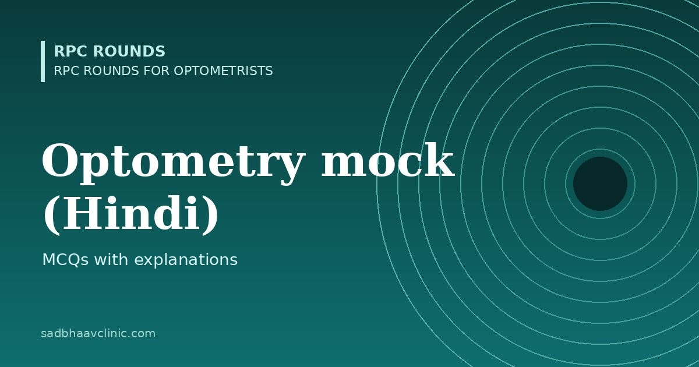

Optometry Mock Test in Hindi: 30 MCQs for Diploma and B.Optom Students (ऑप्टोमेट्री मॉक टेस्ट)
For: Optometrists
Last updated: November 2026
डिप्लोमा और B.Optom छात्रों के लिए हिंदी में 30 प्रश्नों का मुफ़्त मॉक टेस्ट: रिफ्रैक्शन, कॉन्टैक्ट लेंस, चश्मा, बाइनोक्युलर विज़न, रेफ़रल और लो विज़न। हर उत्तर के बाद व्याख्या और आगे पढ़ने के लिए लिंक (अंग्रेज़ी में) मिलेगा।
- फ़ॉर्मेट: चार विकल्प, एक सही उत्तर, 30 मिनट।
- नोट: टेस्ट के बटन अंग्रेज़ी में हैं।
Also: Gujarati mock, Hindi mock, B.Optom mock in English (50 MCQs). Back to RPC Rounds for Optometrists.
Ready for full licensing-style papers? Try the four free OptomDecoded sample mocks (50 questions each, from the book's mock tests).
More free mocks: all mock tests.

New for optometrists: OptomDecoded
5,885 original MCQs, 150 OSCE stations and 800 viva questions for optometry licensing exams (NBEO, OCANZ, OEBC, UK and India), every option explained with a "why not" and a pearl.
How to cite this page
Patel D. Optometry Mock Test in Hindi: 30 MCQs for Diploma and B.Optom Students (ऑप्टोमेट्री मॉक टेस्ट). RPC Rounds (Sadbhaav Eye Clinic). Updated November 2026. Available at: https://www.sadbhaavclinic.com/optometry-mock-test-hindi.html. Accessed [date].
Looking for an eye specialist in Ahmedabad? Learn about our Eye Department or book a consultation with Dr. Dhaval Patel.